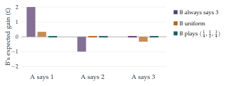

A and B play a guessing game. Each simultaneously names one of the numbers \(1, 2, 3\). If the numbers differ by \(2\), whoever guessed the smaller pays the opponent £2. If the numbers differ by \(1\), whoever guessed the larger pays the opponent £1. Otherwise no money changes hands. Many rounds of the game are played.
If A says he will always guess the same number \(N\), explain (for each value of \(N\)) how B can maximise his winnings.
In an attempt to improve his play, A announces that he will guess each number at random with probability \(\frac13\), guesses on different rounds being independent. To counter this, B secretly decides to guess \(j\) with probability \(b_j\) (\(j = 1, 2, 3\), \(b_1 + b_2 + b_3 = 1\)), guesses on different rounds being independent. Derive an expression for B’s expected winnings on any round. How should the probabilities \(b_j\) be chosen so as to maximize this expression?
A now announces that he will guess \(j\) with probability \(a_j\) (\(j = 1, 2, 3\), \(a_1 + a_2 + a_3 = 1\)). If B guesses \(j\) with probability \(b_j\) (\(j = 1, 2, 3\), \(b_1 + b_2 + b_3 = 1\)), obtain an expression for his expected winnings in the form \[Xa_1 + Ya_2 + Za_3.\] Show that he can choose \(b_1\), \(b_2\) and \(b_3\) such that \(X\), \(Y\) and \(Z\) are all non-negative. Deduce that, whatever values for \(a_j\) are chosen by A, B can ensure that in the long run he loses no money.
The hook
In rock–paper–scissors, any fixed choice can be exploited: play rock every time and your opponent will learn to play paper. The only safe strategy is to randomise. This question is a more intricate version, where the payoffs are unequal and the right randomisation is not obvious. It turns out that by guessing \(1\), \(2\), \(3\) with probabilities \(\frac14\), \(\frac12\), \(\frac14\), a player can guarantee not to lose in the long run, whatever the opponent does.
This is a first glimpse of John von Neumann’s minimax theorem of 1928, the founding result of game theory: in every two-player game where one player’s gain is the other’s loss, there is a randomised strategy for each player that guarantees the best possible result against an opponent who plays perfectly.
Before you start
Write down a table of B’s winnings for each pair of guesses (B’s guess down the side, A’s across the top).
Working through the rules (for instance, if B says \(1\) and A says \(3\), they differ by \(2\) and B, the smaller, pays £2):
| B \(\backslash\) A | \(1\) | \(2\) | \(3\) |
|---|---|---|---|
| \(1\) | \(0\) | \(+1\) | \(-2\) |
| \(2\) | \(-1\) | \(0\) | \(+1\) |
| \(3\) | \(+2\) | \(-1\) | \(0\) |
The table is antisymmetric (swapping the players changes the sign), so the game is fair in the sense that neither player has a built-in advantage.
Working it through
Stage 1 Against a fixed guess
If A always says \(1\), B should say \(3\) and win £2 every round. If A always says \(2\), B says \(1\) and wins £1. If A always says \(3\), B says \(2\) and wins £1. Any fixed guess can be exploited.
Stage 2 Against random guessing
If A guesses uniformly at random, what is B’s expected gain when B says \(j\)? (Average along row \(j\) of the table.)
The row averages are \(\frac13(0 + 1 - 2) = -\frac13\) for \(j = 1\), \(0\) for \(j = 2\) and \(\frac13(2 - 1 + 0) = \frac13\) for \(j = 3\). So B’s expected winnings per round are \[-\tfrac13b_1 + 0\cdot b_2 + \tfrac13b_3,\] which is maximised by \(b_3 = 1\): always say \(3\), winning \(\frac13\) of a pound per round on average. Uniform randomisation does not protect A.
Stage 3 The general case
Now A plays \(j\) with probability \(a_j\). Collect B’s expected winnings by A’s guess: what is the coefficient of \(a_1\) (the average of column \(1\) with weights \(b_j\))?
Reading down the columns of the table, \[\text{B's expected winnings} = (-b_2 + 2b_3)a_1 + (b_1 - b_3)a_2 + (-2b_1 + b_2)a_3,\] so \(X = -b_2 + 2b_3\), \(Y = b_1 - b_3\) and \(Z = -2b_1 + b_2\).
Can you make all three zero? (Three equations, but they are not independent; why not?)
They are not independent: \(X + 2Y + Z = 0\) identically (check it). So \(Y = 0\), giving \(b_1 = b_3\), and \(X = 0\), giving \(b_2 = 2b_3\), force \(Z = 0\) as well. With \(b_1 + b_2 + b_3 = 1\): \[b_1 = \tfrac14, \qquad b_2 = \tfrac12, \qquad b_3 = \tfrac14,\] giving \(X = Y = Z = 0\). Then B’s expected winnings are \(0\) whatever the \(a_j\), and B loses nothing in the long run.■

Looking back
Write the payoff table. All the reasoning was about rows and columns of a \(3 \times 3\) matrix.
Pure strategies are exploitable. Against any fixed guess, and even against uniform guessing, the opponent has a profitable reply.
Equalise. The safe strategy makes the opponent indifferent: every one of A’s choices gives the same expected result.
What’s really going on
The minimax theorem
In a two-player zero-sum game, given by a payoff matrix \(M\), B choosing probabilities \(\mathbf{b}\) and A choosing \(\mathbf{a}\), B’s expected winnings are \(\mathbf{b}^{\mathsf T}M\mathbf{a}\). Von Neumann’s minimax theorem says \[\max_{\mathbf b}\min_{\mathbf a}\mathbf{b}^{\mathsf T}M\mathbf{a} = \min_{\mathbf a}\max_{\mathbf b}\mathbf{b}^{\mathsf T}M\mathbf{a}.\] In words: the amount B can guarantee by announcing a randomised strategy in advance equals the amount A can hold B to by announcing his. This common value is the value of the game. Here, by antisymmetry, the value is \(0\), and the strategy \((\frac14, \frac12, \frac14)\) is optimal for both players. The theorem is proved using linear algebra and convexity (it is equivalent to the duality theorem of linear programming), and its generalisation to many players, the Nash equilibrium, won John Nash the Nobel Prize in economics.
Why randomise?
Randomness here is not about luck but about information. If B’s choice can be predicted, A can exploit it; by randomising with the right probabilities, B makes his choice unpredictable and ensures that no prediction would help. Real examples include penalty kicks in football, where studies of professional players have found kickers and goalkeepers randomising between left and right in proportions close to the game-theoretic optimum, and tennis serves.
John von Neumann proved the minimax theorem in 1928, in a paper “On the theory of games of strategy”, motivated by poker, where bluffing is a form of randomisation. In 1944 he and the economist Oskar Morgenstern published Theory of Games and Economic Behavior, which founded game theory as a subject. Von Neumann later recalled that he had regarded the minimax theorem as the key result, without which there would be no theory of games worth publishing.
The thinking skill
When any fixed choice can be exploited, choose at random, with probabilities that make the opponent indifferent between their options.
At university, game theory, linear programming and the theory of algorithms all use this idea. Randomised algorithms, for example, protect themselves against worst-case inputs by making random choices that no adversary can predict.
Try this next
A’s best reply. If B uses \((\frac14, \frac12, \frac14)\), show that every strategy of A gives expected winnings \(0\). If instead B uses \((\frac13, \frac13, \frac13)\), find A’s best reply.
Rock, paper, scissors. Write the payoff matrix for rock–paper–scissors and find the optimal strategy. Why is it uniform here but not in the question?
Uniqueness. Show that \((\frac14, \frac12, \frac14)\) is the only strategy for B that guarantees not losing. (Hint: it must make \(X\), \(Y\), \(Z\) all non-negative; use \(X + 2Y + Z = 0\).)
A modified game. If the penalty for differing by \(2\) is £3 instead of £2, find the optimal strategy.
Further reading
Ken Binmore, Playing for Real (Oxford University Press). A thorough but friendly introduction to game theory.
Avinash Dixit & Barry Nalebuff, The Art of Strategy (Norton). Game theory with examples from sport and business.
William Poundstone, Prisoner’s Dilemma (Anchor). Von Neumann, game theory and the Cold War.